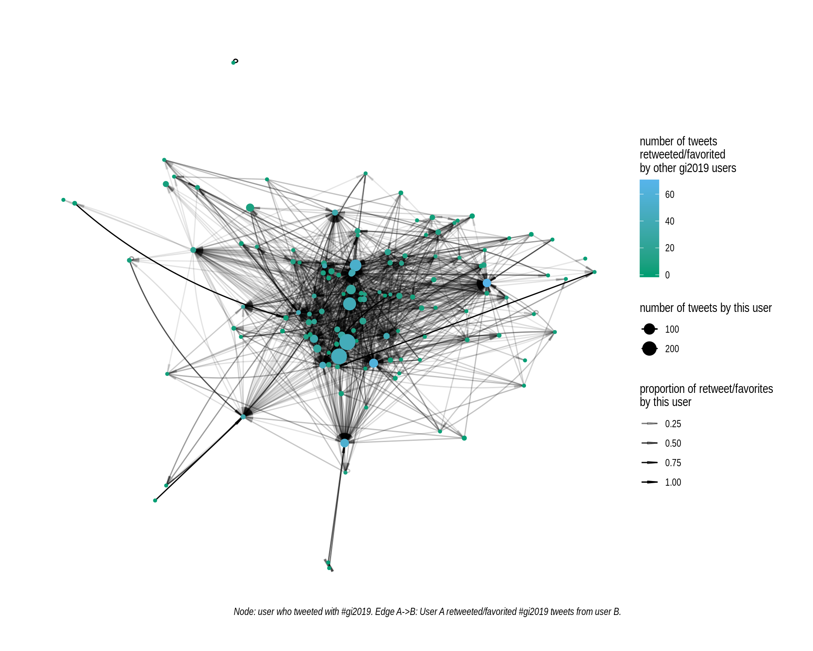

Tweet network from Genome Informatics 2019
Nov 10 2019 plot RI want to have a quick look at the tweets from the Genome Informatics meeting:
- to learn how to use the rtweet and ggraph R packages.
- to create a visual representation (as nice as possible) of our open community, with attendants sharing with each other.
- to highlight the high-volume accounts and their value even for someone attending the conference.
- to see if there are sub-groups of researchers among the attendants.
There is already a comprehensive post about the tweets at this conference (see lazappi’s Twitter stats). Here, I’m trying to visualize the network of researchers at the conference (or interested enough to tweet about it) and how they retweeted/favorited each other’s tweets. Some sort of measure of who values whose tweets among the attendants. With this network, I hope to highlight that the high-volume accounts at the conference are also valuable for people attending the conference. I’m also curious to see if some sub-groups appear.
All the analysis/numbers are derived only from accounts that tweeted at least once the conference hashtag #gi2019.
This was a way to mostly look at twitter-active people attending the conference.
Of course anyone can use the hashtag so it also includes people that didn’t attend but were interested enough to use the hashtag at least once.
In the rest, I might say “people attending the conference” but I also mean those who twitted the hashtag at least once.
Retweets and favorites
A lot of retweets/favorites between people attending the conference! The high-volume accounts are in the center, super valuable for people at the conference too!

- Nodes are different users colored by how many other users retweeted/favorited their tweets.
- The size of the node corresponds to the total number of original tweet by this user.
- The edge represents retweets/favorites.
A -> B: A retweeted/favorited tweets from B. - The transparency of the edge represents the proportion of the total retweets/favs from one user (A) that went to the other user (B).
MVP per user
For each user, I keep only one outgoing connection, the one corresponding to the most retweeted/favorited. Kind of who was the most valuable for this user, the MVP per user. I’m not good with names… If tied, retweets are used to break the ties.
Interactive network. May take a few seconds to render. Scroll to zoom in (names appear when zooming in). Hover on nodes to see more information about a user, on edges to see the proportion of the retweets/favorites from user A that went to user B.
Methods
- Extract tweets/retweet from accounts that have tweeted at least once with the conference hashtag (
#gi2019).- Searched for
#gi2019. Extracted accounts when excluding retweets. Kept tweet/retweets from these accounts. - Easy, the rtweet package can easily do this type of search.
- Searched for
- Extract the recent favorited tweet for these accounts and keep all the ones with the conference hashtag.
- More laborious because it’s not part of the search results.
- Also there is a limit for the number of query per 15 mins. Had to extract some, wait and repeat.
- Make a network with each accounts (node) and the number of times they retweeted/favorited a tweet from someone in the set.
- For a pair of accounts, I summed the number of retweets and favorited tweets.
- The size of the edges are the relative amount of retweet/favorites for each account, i.e. the proportion of someone’s GI2019 retweets/favorites that went to a particular user.
- Look for sub-groups
- I first tried to keep only one outgoing edge per node: the most retweeted/favorited GI2019 twitter account for each user.
- I also ran some community detection algorithms but the results weren’t very informative (way too many communities, don’t want to dig into them…).
Data
I made two TSV files with tweet/retweets and favorites info, available here.